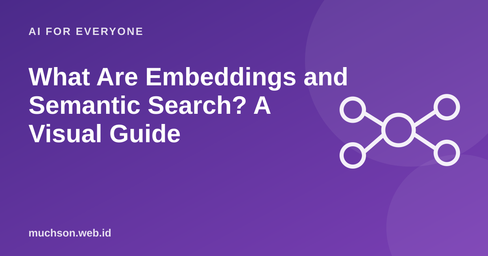

What Are Embeddings and Semantic Search? A Visual Guide
Ordinary search finds the exact same words. Semantic search finds things with similar meaning, even when the words differ. The key is the embedding: how a computer puts meaning into numbers.
By Muhammad Muchson Attoyibi··1 min read

Meaning as a position on a map
Imagine a map where every sentence has a point. Sentences with close meanings are placed near each other: "broken car" is near "vehicle breakdown", but far from "fried rice recipe". An embedding is the coordinates of those points, as a list of numbers (a vector) that usually has hundreds or thousands of dimensions.
Figure 1. Real embeddings have hundreds of dimensions. This is only a picture to make it easy to imagine.Text description of the diagram
Figure 2. Similarity is usually measured with cosine similarity or the distance between vectors.Text description of the diagram
Convert documents: to embeddings and store them
Convert the question: to an embedding too
Find the nearest: compute similarity
Show results: most similar first
Compare with keyword search
Not just for search
The same embeddings are used for document search, recommendations, topic grouping and duplicate detection. It works the same way: meaning becomes distance.
FAQ
What is a vector database?
A database designed to store embeddings and quickly find the nearest ones. For a small number of documents, ordinary storage is enough.
Is an embedding the same as a token?
No. A token is a piece of text the model processes. An embedding is a numeric representation of the meaning of text.
Can embeddings be used for other languages?
Yes. Choose an embedding model that supports your language and test it with your data.
Share:
Muhammad Muchson AttoyibiSoftware engineer and academic trainer based in Malang, Indonesia. Writes about technology, learning, and practical everyday topics. About me